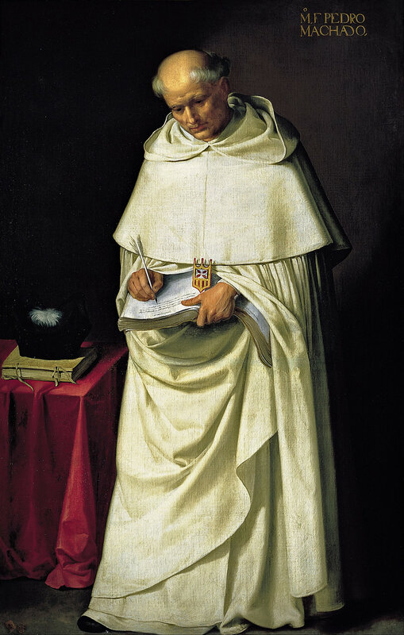
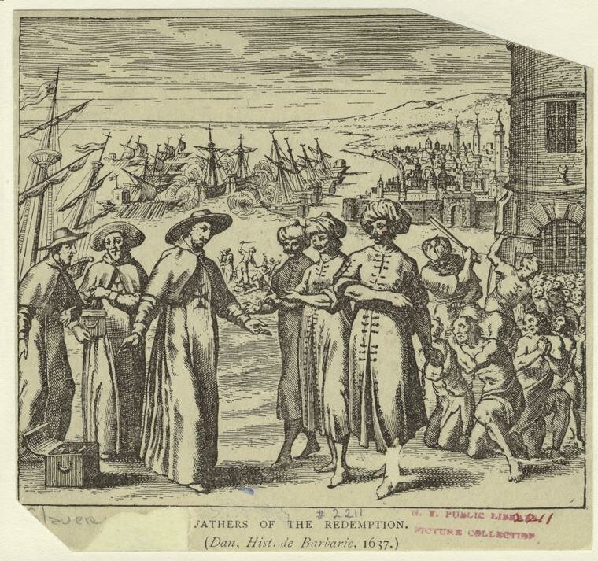

Улудж Али и испанская разведка: попытки подкупа
Буржуи
сейчас же
двинули в ход
предательство,
подкуп
и золото.
[В. В. Маяковский (1924)
Мы видели, что при первой известной нам попытке испанской разведки обезвредить корсара Улудж Али последний вроде бы и не был участником запланированной операции, он был скорее ее жертвой. Первый непосредственный контакт между испанскими спецслужбами и опасным ренегатом датируется 1569-м годом. Поощряемые слухами о хорошем отношении корсара к христианам, мастера заплечных дел испанского короля попытались повлиять на Улудж Али-пашу через его родственников-христиан. Мы уже упоминали выше, что этот метод был в арсенале спецслужб того времени. Вице-королю Неаполя было направлено срочное секретное поручение разыскать в Калабрии любых родственников Улудж Али (мать, братьев, других близких, которые могут еще проживать на родине корсара) и в случае успеха – незамедлительно направить их в Мадрид. Ответ вице-короля был неутешительным: родственники либо слишком молоды и ничего не знают о юноше, пропавшего много лет назад, либо слишком стары, чтобы могли вынести такое длинное путешествие. Вместо родственников неаполитанский наместник разыскал и послал в испанскую столицу земляка и даже бывшего раба алжирского корсара – некоего Giovanni Battista Ganzuga. Был разработан очередной план (куда же в разведке без планов!), согласно которому Гансуга должен отправиться в Алжир под прикрытием монаха-члена ордена мерседариев, которые занимались выкупом невольников из плена.

Портрет монаха-мерседария (члена «Ордена Пресвятой Девы Милосердной для выкупа невольников») (1628/1664). Художник Francisco de Zurbarán, находится в Real Academia de Bellas Artes de San Fernando, Мадрид.

Монахи договариваются о выкупе христианских пленников. Гравюра XVII в.(Источник: Barbary corsairs. New York : Putnam, 1902)
Там он должен встретиться со своим бывшим хозяином и предложить ему следующие почетные условия: Улудж Али переходит (естественно, вместе с Алжиром) в подданство Габсбургам и взамен получает титул испанского маркиза или графа (по своему выбору) и феодальное владение с доходом 12000 дукатов в год. Если Улудж согласится на дальнейшие переговоры, Гансуга немедленно возвращается в Мадрид и получает дальнейшие инструкции от секретаря короля Филиппа ΙΙ и фактического главы королевской секретной службы Антонио Переса. Интересная деталь: чтобы якобы нищий монах мог получить доступ к секретарю короля был разработан специальный сигнал – агент должен был коснуться правой руки Переса особым образом (об этом мы можем узнать из сохранившегося в архивах документа под названием «el despacho que estava hecho para que llevasse el hombre que avia de yr a Argel».( «Сигнал, подтверждающий, что человек прибыл из Алжира или направляется в Алжир»).
Не надеясь на стопроцентный успех разработанной операции, разведка параллельно готовила еще одну, главными действующими лицами которой являлись корсиканцы из семьи Gasparo Corso. Эта семейка являла собой прообраз нынешней мафии: пять братьев, создавших сеть по международной торговле и сбору информации в Западном Средиземноморье. Они имели свои базы в Валенсии, Алжире, Барселоне и Марселе. Один из братьев – Франческо, купец из Валенсии, – должен был направиться в Алжир, где вместе с другим братом Андреа (купец и посредник по выкупу пленных в Алжире) вступить в переговоры с Улудж Али с целью убедить его перейти на сторону Габсбургов в обмен на muy buena renta con algun titulo para si y sus descendientes («очень хороший доход и высокий титул для него самого и его потомков»).
Обычно испанцы очень тщательно готовили свои операции, но в данном случае обстоятельства торопили их. Назревал мятеж морисков и неминуемый союз их с османами, что могло помешать осуществлению задуманных планов.
Обговорив с неаполитанским вице-королем основные принципы операции, Франческо отправился в Мадрид, где план был разработан детально. Братья Гаспаро Корсо должны будут вступить в контакт с адъютантом Улудж Али Меми Корсо (родственником братьев), капитаном галеры Катанья реис, и марокканским принцем в изгнании Абдул Меликом, которые должны стать посредниками в предложении крупной взятки алжирскому наместнику за его переход на сторону Габсбургов. Естественно, сами посредники получали за свои услуги очень высокую оплату.
Но испанцы опоздали. Пока готовилась операция неутомимый Улудж Али покинул Алжир и, во исполнение приказа султана оказать помощь морискам, захватил Тунис, чем значительно укрепил свое положение в турецкой иерархии. Подходы к нему стали значительно труднее, и робкие попытки Меми Корсо и одного из братьев Гаспаро Корсо вызвать Улуджа на переговоры не возымели действия. А несколько месяцев спустя Улудж Али-паша во главе алжирского флота направился на соединение с флотом Империи, который готовился дать решающий бой христианам при Лепанто.
Начался новый период жизни барбарийского корсара Улуджа. А вместе с ним – и новые попытки испанской разведки нейтрализовать талантливого флотоводца. На этот раз решительные и бескомпромиссные: было принято решение о его физическом устранении. Но об этом в следующий раз.